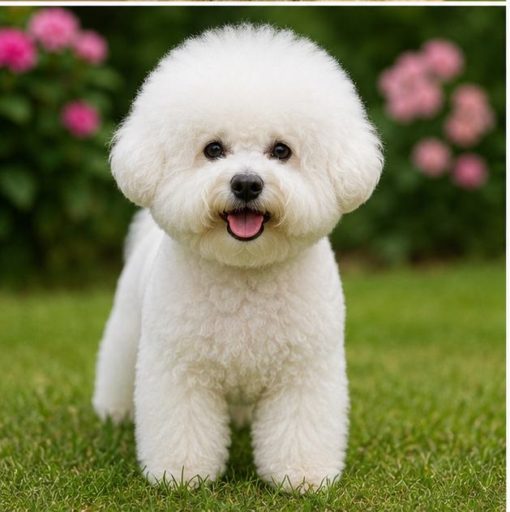
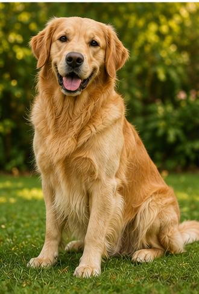
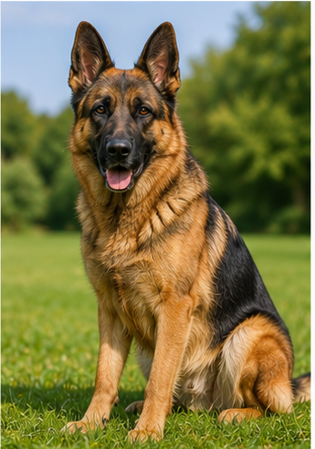
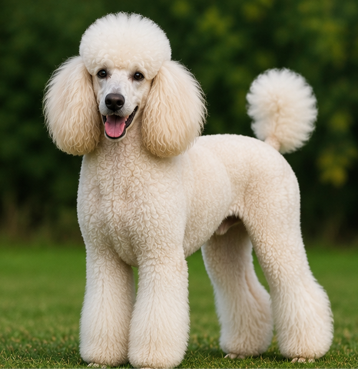
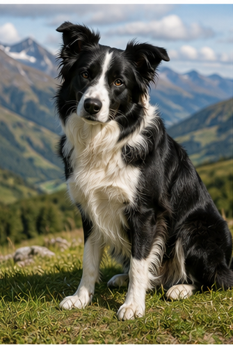
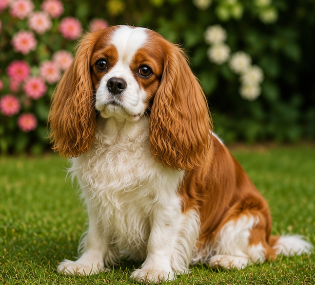
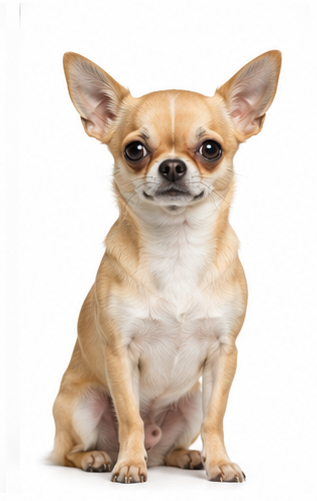
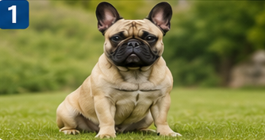
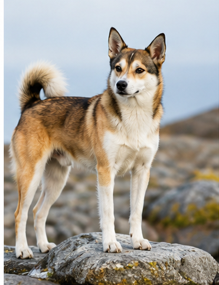

🐶 Hunderaser
Her samler vi enkel og nyttig rasekunnskap om hunder. Starten er 10 populære raser – senere kan vi bygge videre til 100+ raser.
⬅️ Tilbake til KunnskapssenterFinn en hunderase
Søk etter rase, opprinnelse eller egenskap.

🐶 Bichon Frisé
En glad, sosial og leken selskapshund som ofte passer godt for familier og eldre. Krever jevnlig pelsstell.

🐶 Golden Retriever
En av verdens mest populære familiehunder. Vennlig, lærevillig og glad i aktivitet, tur og kontakt med mennesker.

🐶 Labrador Retriever
En sosial, robust og lærevillig hund. Passer ofte godt for aktive familier og mennesker som liker tur og trening.

🐶 Schæfer
En intelligent og allsidig brukshund som trenger tydelig trening, aktivitet og oppgaver for å trives godt.

🐶 Puddel
En svært lærevillig og elegant hund som finnes i flere størrelser. Krever regelmessig pelsstell og mental aktivitet.

🐶 Border Collie
En ekstremt intelligent gjeterhund som trenger mye aktivitet, trening og mentale utfordringer.

🐶 Cavalier King Charles Spaniel
En mild, kjærlig og sosial selskapshund som ofte trives godt i familier og sammen med mennesker.

🐶 Chihuahua
En svært liten, våken og personlig hund. Trenger trygg håndtering, sosialisering og varme omgivelser.

🐶 Fransk Bulldog
En sosial og sjarmerende hund med mye personlighet. Trenger moderat aktivitet og oppmerksomhet på varme dager.

🐶 Norsk Lundehund
En unik norsk rase med spesielle egenskaper, opprinnelig brukt til jakt på lundefugl langs kysten.
Videre plan
Neste steg kan være å legge til flere raser, lage egne detaljsider og etter hvert vise “Ukens hunderase” på forsiden.